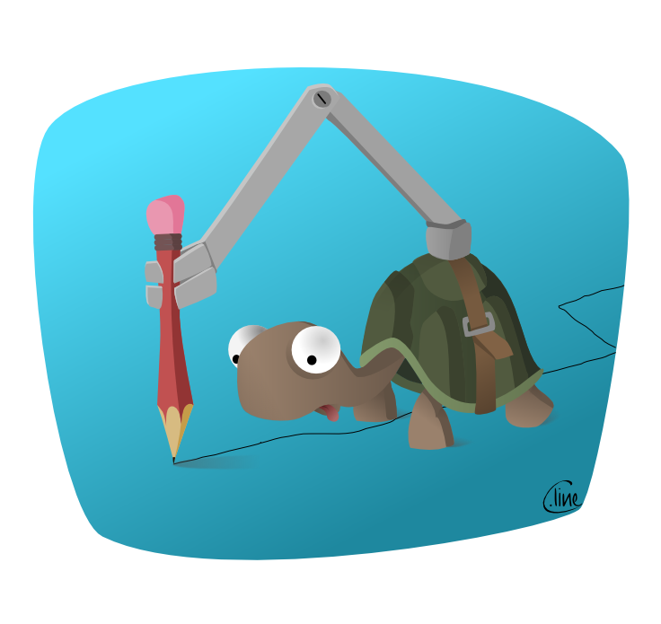

A linguagem Logo, criada em 1967, tem como objetivo principal o auxílio na aprendizagem de noções geométricas, exploração espacial e princípios básicos de programação. Uma das funcionalidades proporcionadas por essa linguagem é a tartaruga (derivada de um robot com esse nome) que representa um cursor no écrã ao qual são dadas instruções de movimento e desenho.
A tartaruga tem incorporada uma caneta que, quando está para baixo, deixa um rasto (que é desenhado no écrã). Sempre que a caneta está para cima, o seu movimento não deixa rasto (e nada é desenhado no écrã).
A sua primeira tarefa consiste em começar por definir um mundo para a tartaruga; criar uma tartaruga nesse mundo e movimentá-la segundo um conjunto de instruções de modo a criar uma imagem.
Assuma que o mundo da tartaruga é definido por uma grelha, com uma determinada altura e uma determinada largura, por onde a tartaruga se poderá movimentar de acordo com o seguinte conjunto de instruções:
A tartaruga tem associado a si uma grelha, uma posição (x,y), uma direção (Norte, Sul, Este e Oeste) e a posição da caneta (para cima ou para baixo).
Quando criada, a tartaruga posiciona-se na localização (0,0), tendo como referencial o canto superior esquerdo da grelha, está virada para Este e tem a caneta para cima.
No caso de serem dadas instruções que impliquem a movimentação da tartaruga para fora dos limites da grelha, esta movimenta-se o máximo que puder até à fronteira e permanece aí.
Uma vez executado o conjunto de instruções dado à tartaruga e criada uma imagem, a segunda e terceira parte da sua tarefa consiste na análise da imagem e no reconhecimento de um padrão nessa mesma imagem.
A primeira linha do input contém o valor de uma flag que pode tomar os
valores 0, 1 ou 2.
A linha seguinte contém dois inteiros LINS e COLS (1 <= LINS, COLS <= 10)
indicando, respectivamente, o número de linhas e colunas que definem a
grelha da imagem.
Nas linhas subsequentes estão as instruções a passar à tartaruga, uma
instrução por linha. O conjunto de instruções termina com a palavra
Cada instrução da forma 1 <= x <= 20.
A partir deste ponto do input, é definido o padrão a procurar na imagem.
Numa primeira linha, dois inteiros N e M (1 <= N, M <= 10) indicam,
respectivamente, o número de linhas e colunas do padrão. As N
linhas seguintes definem o padrão. Cada uma dessas linhas possui
M caracteres ('.' ou '*'), alinhados à esquerda e com o
espaçamento de 1 carater.
No caso do valor da flag ser igual a 0, deverá apresentar no écrã o resultado da execução das instruções fornecidas à tartaruga. Para tal, assuma que todas as posições da grelha estão incialmente preenchidas com '.' e que a tartaruga, quando tem a caneta para baixo, marca as posições por onde passa com '*'. As posições da grelha devem ser apresentadas alinhadas à esquerda com um espaçamento de 1 carater.
No caso do valor da flag ser igual a 1, deverá indicar, separado por um espaço, a percentagem das posições da grelha marcadas pela tartaruga e, o número de linhas e colunas que não possuem qualquer marca.
No caso da flag ser igual a 2, deverá ler do input o padrão a
procurar e responder
Input |
Output |
|---|---|
0 5 5 D F 4 U R R F 4 D L F 2 L F 2 L L U F 2 D L F 2 L F 4 end 3 3 * . . * * * * . . |
* * * * * * . . . . * * * . . * . . . . * * * * * |
Input |
Output |
|---|---|
1 5 5 D F 4 U R R F 4 D L F 2 L F 2 L L U F 2 D L F 2 L F 4 end 3 3 * . . * * * * . . |
60 0 0 |
Input |
Output |
|---|---|
2 5 5 D F 4 U R R F 4 D L F 2 L F 2 L L U F 2 D L F 2 L F 4 end 3 3 * . . * * * * . . |
Sim |
Copyright © DCC, Faculdade de Ciências da Universidade do Porto
Conteúdo de Fernando Silva e Vanessa Silva (DCC/FCUP), copiado do site original.